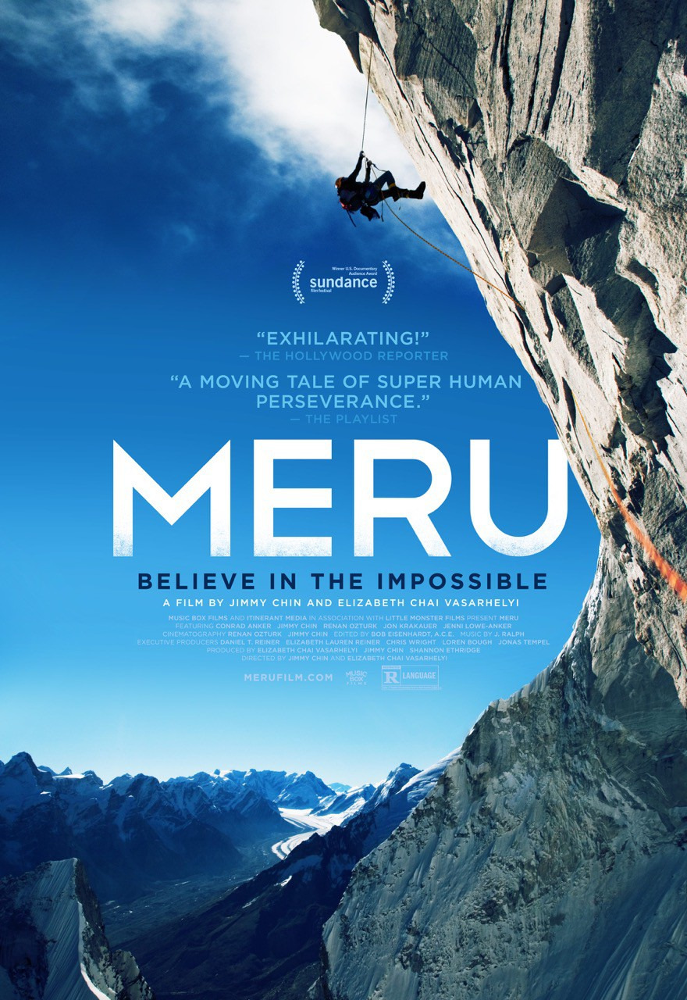
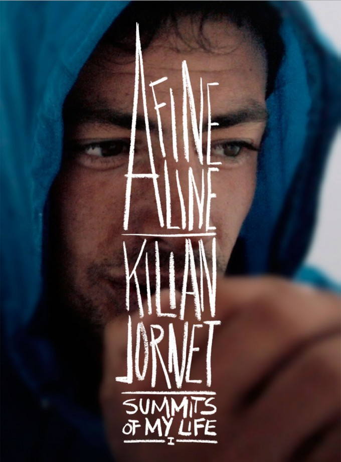
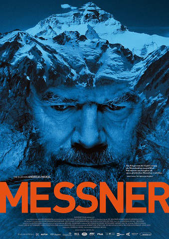

After 2 years at IDEA Programme in Lyon, I co-created MakerTour,
a 6-month expedition towards 50 fablabs in Europe in 2015-2016.
New summit after the adventure?
Bring Le Wagon and its community to Lyon!
|  |
MeruAfter suffering dramatic set backs in their lives, three close friends who are among the world's best professional climbers battle their complicated pasts, inner demons and nature's harshest elements in an attempt to confront the Shark's Fin on Mount Meru. |
|  |
A Fine LineA Fine Line takes us on a breathtaking journey over the spectacular snow-covered peaks of the Alps as we join a small group of extraordinary mountain athletes in their pursuit of happiness and fulfillment. |
|  |
Messner, Profession AlpinisteNé en 1944 dans le Haut-Adige, Reinhold Messner a été entraîné dès son enfance par son père à gravir les sommets. Il a depuis escaladé les quatorze montagnes du monde culminant à plus de 8000 mètres. |
This page has been coded during the FullStack program @LeWagon. That was probably the best experience of my entire life.